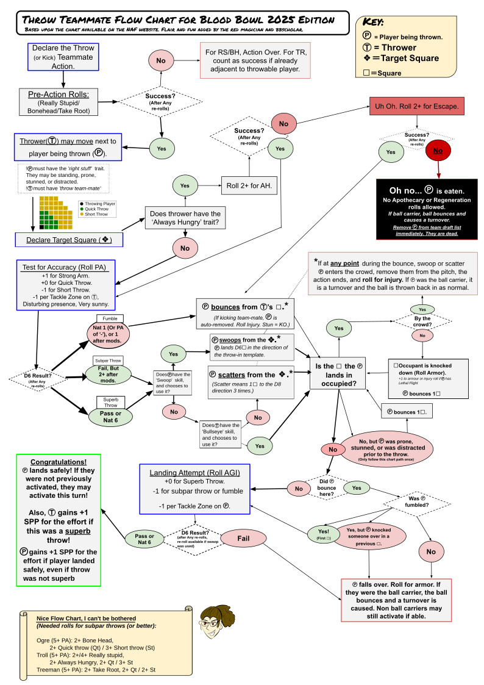

Blood Bowl Third Season (aka BB2025) is here!
In this post, I present the updated version of my favorite Throw Teammate (TTM) Flowchart. A quick Facebook search reveals that there are several, dare I say, many flowcharts for TTM out there. For BB2016 there was even one on the NAF website. For BB2020 there are several, for example one by Mike Davies posted on Facebook.
But my personal favorite is the flowchart made by the Red Magician for BB2020, presented in a blog post on his own website. I found it a few years ago where it is was discussed in a Reddit post.
I like it because for me it has the right balance between compressing some things (such as the Throwing player either being an Ogre, Troll or Tree), but being comprehensive in other things, such as what happens when a thrown player bounces off another player on the field. Also I like the layout, having a large font size and designed to cram everything on a single A4 page that can be printed and laminated. As a result it might come a across a bit messy, we can’t have it all.
With the new edition, I contacted the mysterious Red Magician (who replied promptly!) and obtained the source file (a Google Drawing) and his permission to update and share the flowchart. I converted the Google Drawing into a SVG file with embedded fonts that can be edited with Inkscape, an Open Source vector graphics editor, and exported to PDF.
So what’s new? I used as a reference a recent BB2025 version, as reviewed and discussed in a Reddit post from last december. It appears to be somewhat verified by rules lawyers and others from the community.
Changes to TTM involve the outcomes of the Throw, i.e. no more terrible or successful throw, now we have “subpar throw”. I also added in the effects of new skills such as Bullseye and Lethal Flight, and gave the buffed Swoop skill a more prominent position, as it is likely to become standard on Goblin teams.
Without further ado, here it is:

Let me know if you spot any mistakes.The updated Throw Teammate Flowchart for BB2025 can be downloaded here and the SVG source is available here if you want to tinker with it.
Note, the text could only be exported as paths (i.e. vector shapes, curse you Google!), the SVG is now a mix of editable text and vector shapes. Be warned!
{kind=link}
{kind=link}